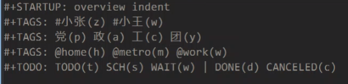
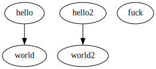

Org Mode
Table of Contents
1. 简介
desktop-save-mode
shift + 方向键 or C-c C-t: 切换 todo/done
shift+tab 全文折叠
1.1. org文件header
C-c C-c 使配置生效
#+STARTUP: indent 显示缩进, #+STARTUP: content 默认不显示标题下的内容 #+STARTUP: showall 展开所有内容(不包含drawer) #+STARTUP: showeverything 展开所有, 包括drawer #+STARTUP: logdone 自动添加CLOSE (完成时间) ;;(setq org-log-done 'time)
#+TAGS: @rust(r) @compiler(c) #+TODO: TODO(t) SCH(s) WAIT(w) | DONE(d) CANCELED(c)
this is a drawer
1.2. 设置时间
C-c .在日历中设置激活时间 尖括号(在agenda中显示)- 静态时间(方括号)
[2020-11-01 日]输入日期后C-c C-c自动补充星期.(文本, 不显示在agenda中) - 在日期上按
C-c .可修改时间. +1, 18, 07-18 …. - 时间区间(长):
<2022-12-16 五 23:00>--<2023-12-01 五>两次C-c . - 小时区间 :
<2022-12-16 五 23:00-23:40> - 用
C-c C-c来格式化时间
1.2.1. 开始时间&截止时间
预计开始时间schedule:
C-c C-sSCHEDULED: <2022-12-16 五 21:00>最后期限deadline:
C-c C-dDEADLINE: <2022-12-16 五 23:00>
1.3. gtd简介
1.3.1. 任务分类流程
- 是否可执行?
- 否则:
- Trash: 不做了
- Someday/maybe: 暂时做不了, 没法做
- reference: 参考/收藏..
- 否则:
- 是否可一口气完成(非项目)
- 否则将其作为项目进行管理: "plan project" (将其拆分为若干一步可执行的小任务)
- 所需时间是否超过两分钟?
- 不超过就马上开始!
- 是否一定要亲自去做?
- 否则加入到 "waiting for" 清单
- 新增一个交付任务
- 是否要在特定日期来做?
- 若是, 则记录到日历中
- 否则, 加入到 "context task" (执行清单?) ,设置schedule
inbox/next-step/project/someday-maybe/wait-for/日历
回顾: 重设时间, 删除任务, 及时更新清单!!!
1.4. 设置tag
C-c C-c 进行快速设置.

1.5. agenda
C-c [ 将当前文件加入到agenda搜寻路径.
一般将 C-c a 设为
org-agenda:
a本周/今日计划- 空格/tab: 显示详情
- t: 切换状态
- g: 刷新
- s: save
+ t 所有todo事项
1.6. 归档 archieve
C-c $
将条目移动到同名文件加后缀archieve的另一文件中.
1.7. 动态生成图片


2. Example
2.1. inbox
2.1.1. 读rust @rust
2.1.2. 看cranelift源码 @rust @compiler
2.2. mytask
hello mytask